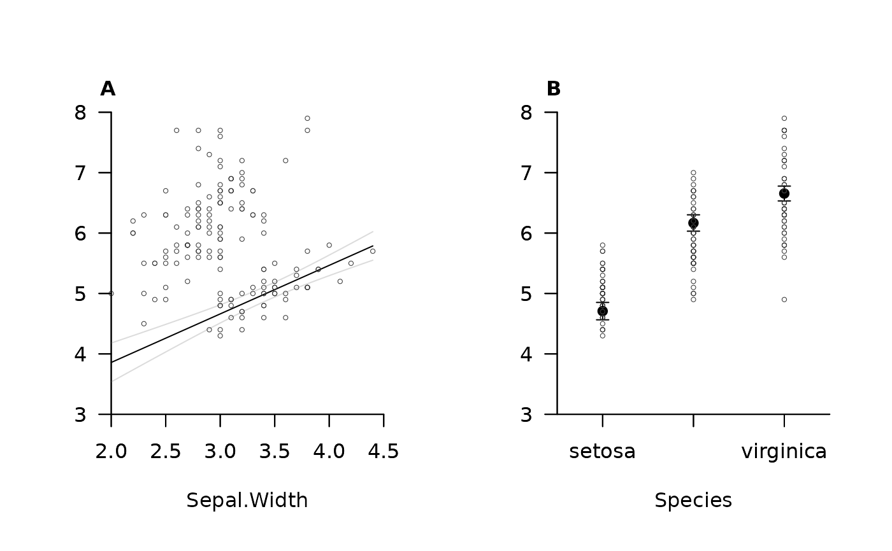
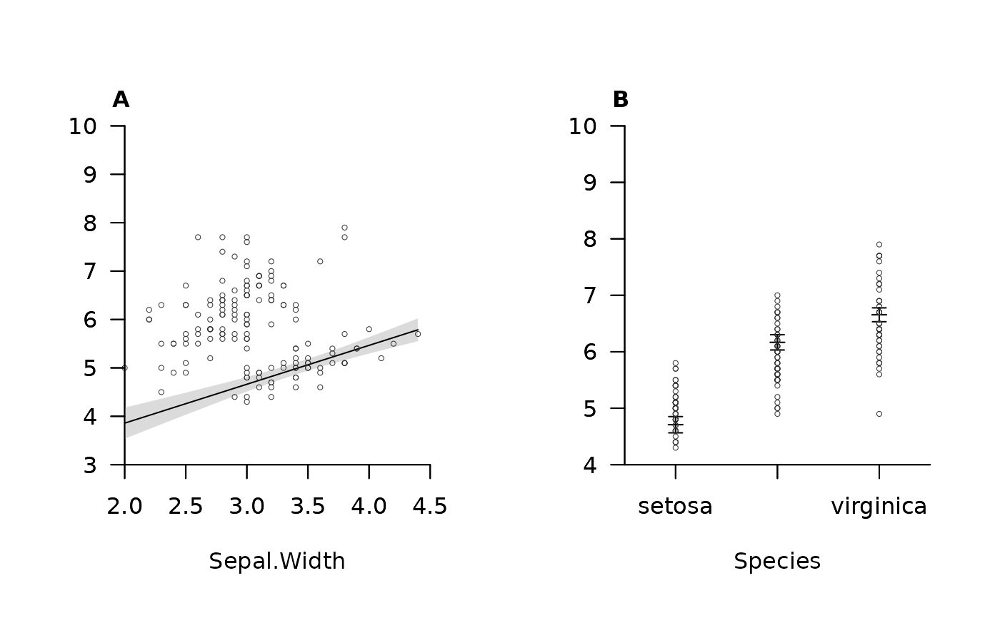
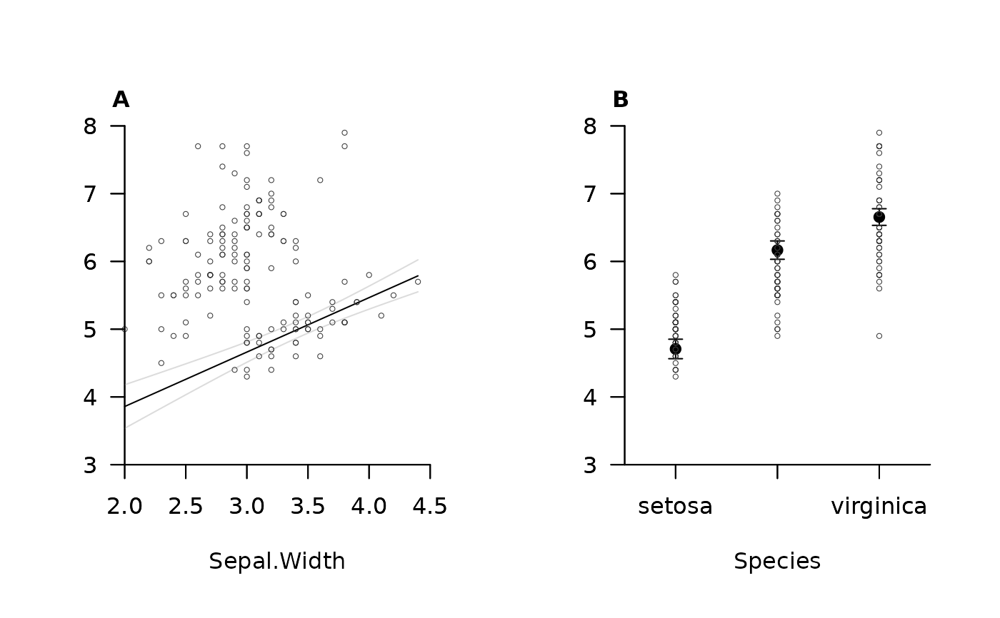
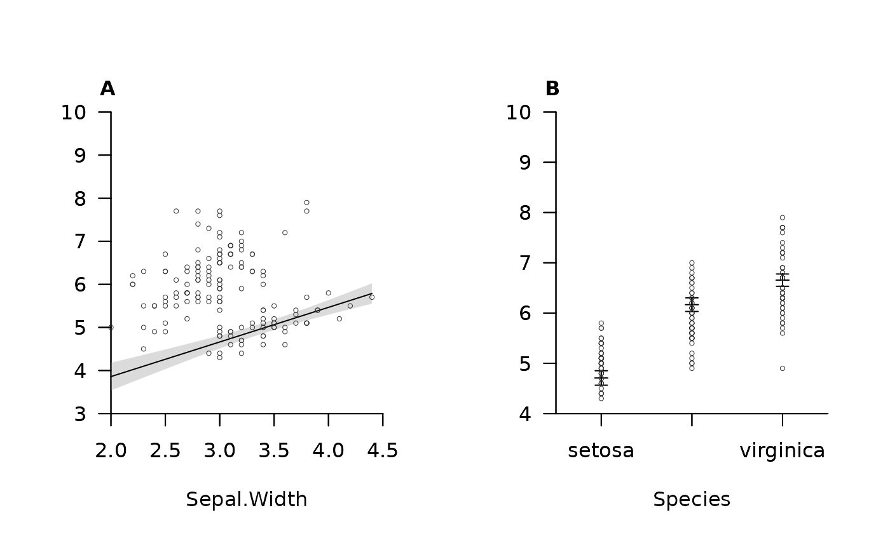
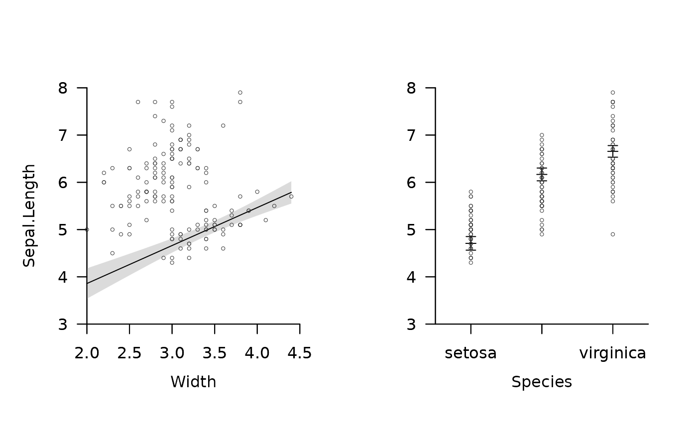
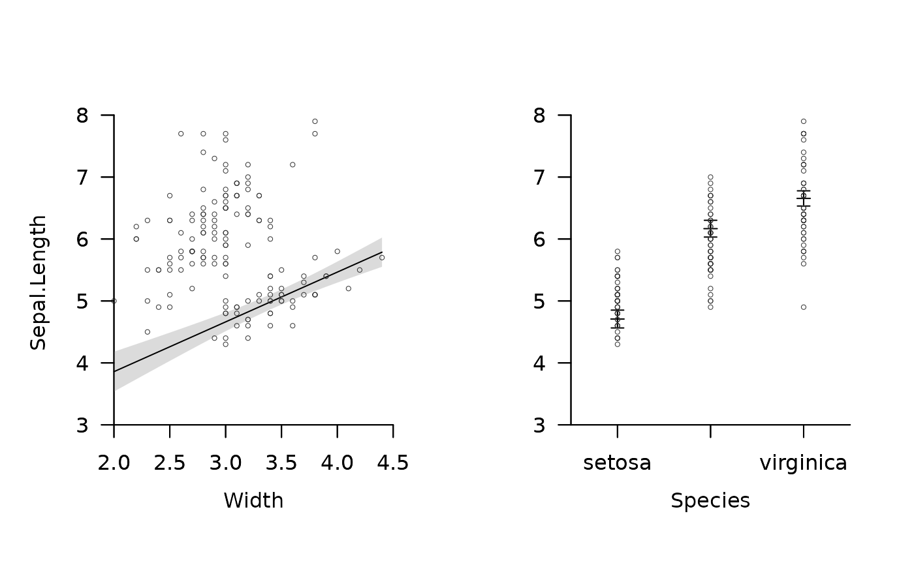

This function plots pretty one-dimensional predictions from a statistical model. Given a model, for each predictor, the function plots the predicted values of the response and associated 95 percent confidence intervals. Other predictors are held at the first level (for factors) or an average (e.g., mean or median, as specified) value (for doubles) or at custom values specified in a dataframe called newdata.
pretty_predictions_1d(
model,
data = NULL,
newdata = NULL,
constants = NULL,
x_var = NULL,
n_pred = 100,
average = mean,
transform_x = NULL,
xlim = NULL,
ylim = NULL,
ylim_fix = TRUE,
pretty_axis_args = list(),
add_points = list(cex = 0.5, lwd = 0.5, col = "grey20"),
add_error_bars = list(add_fit = list(pch = 3)),
add_error_envelope = list(),
add_xlab = list(line = 2.5),
add_ylab = list(line = 2.5),
add_main = list(adj = 0, font = 2),
one_page = TRUE,
...
)Arguments
- model
A model (e.g. an output from
gam).- data
(optional) The dataframe used to fit the model. If missing, this is extracted via
model.frame(model); however, this approach may fail if functions (e.g.,scale) have been applied to variables as part of the model formula.- x_var, n_pred, average, newdata, constants
(optional) Prediction controls.
x_varis a character variable that defines the name(s) of predictors for which to plot predictions. If unsupplied, predictions are plotted for each predictor in themodel.n_predis a number that defines, for continuous predictors, the prediction resolution. For each continuous predictor, a sequence of values from the minimum to maximum value for that variable, withn_predelements, is used for prediction. (For factors, predictions are plotted for each factor level.) Alternatively,newdatacan be supplied.averageis a function that is used to define the value at which doubles are held constant for prediction. The default ismean.newdatais a dataframe that contains the data used for prediction. If supplied, this should contain one variable that changes in value (defined inx_var), with other variables held at selected values. If supplied, this supersedesconstants(see below).constantsis a one-row dataframe of constant values for explanatory variables. If supplied,n_predmodel predictions are generated forx_var, while holding other variables constant at the values specified inconstants.
- transform_x
A function to transform values of the predictor(s) for plotting.
- xlim, ylim, ylim_fix, pretty_axis_args
Axis controls.
xlimandylimcontrol axis limits for all plots. If unsupplied, pretty limits are used. If pretty limits are used,ylim_fixis a logical variable that defines whether or not to use the same y-axis limits on all plots (TRUE), which can facilitate comparisons, or to use plot-specific limits (FALSE).pretty_axis_argsis a named list of arguments, passed topretty_axis, for further control.- add_points
(optional) A named list of arguments, passed to
points, to customise observations added to plots. An empty list specifies default options.NULLsuppresses this argument.- add_error_bars, add_error_envelope
(optional) Named lists of arguments, passed to
add_error_barsandadd_error_envelope, to customise the appearance of error bars (for factor predictors) or envelopes (for continuous predictors) respectively. Empty lists specify default options.NULLsuppresses these arguments.- add_xlab, add_ylab, add_main
(optional) Named lists of arguments, passed to
mtext, to add axis titles to plots. X-axis labels and plot titles are added to each plot, while only one global y-axis label is added. Empty lists specify default arguments, in which case variable names are taken as specified in themodeland plot titles are given as capitalised letters or numbers in square brackets (if there are more than 26 predictors). Alternatively, names can be specified via the `text' argument tomtext. Foradd_xlabandadd_main, the `text' argument can be a vector with one element for each plot; foradd_ylabonly one element should be supplied.NULLsuppress these arguments.- one_page
A logical variable that defines whether or not to plot all plots on one page.
- ...
Additional arguments passed to
pretty_plot.
Value
The function plots predictions from a model. A list of axis parameters, with one element (from pretty_axis) for each variable, is returned invisibly.
Details
Interactions are not currently supported.
See also
Examples
#### Define a model for predictions
mod_1 <- stats::lm(Sepal.Length ~ Sepal.Width + Species, data = iris)
summary(mod_1)
#>
#> Call:
#> stats::lm(formula = Sepal.Length ~ Sepal.Width + Species, data = iris)
#>
#> Residuals:
#> Min 1Q Median 3Q Max
#> -1.30711 -0.25713 -0.05325 0.19542 1.41253
#>
#> Coefficients:
#> Estimate Std. Error t value Pr(>|t|)
#> (Intercept) 2.2514 0.3698 6.089 9.57e-09 ***
#> Sepal.Width 0.8036 0.1063 7.557 4.19e-12 ***
#> Speciesversicolor 1.4587 0.1121 13.012 < 2e-16 ***
#> Speciesvirginica 1.9468 0.1000 19.465 < 2e-16 ***
#> ---
#> Signif. codes: 0 ‘***’ 0.001 ‘**’ 0.01 ‘*’ 0.05 ‘.’ 0.1 ‘ ’ 1
#>
#> Residual standard error: 0.438 on 146 degrees of freedom
#> Multiple R-squared: 0.7259, Adjusted R-squared: 0.7203
#> F-statistic: 128.9 on 3 and 146 DF, p-value: < 2.2e-16
#>
#### Example (1): Plot predictions using default options
pretty_predictions_1d(mod_1)
#> pretty$n greater than the number of factor levels; resetting n to be the total number of factor levels.
#### Example (2): Plot predictions for specified variables
pretty_predictions_1d(mod_1, x_var = c("Sepal.Width"))
pretty_predictions_1d(mod_1, x_var = c("Sepal.Width", "Species"))
#> pretty$n greater than the number of factor levels; resetting n to be the total number of factor levels.
 #### Example (3): Plot predictions using custom newdata
p_dat <- data.frame(Sepal.Width = median(iris$Sepal.Width),
Species = factor(levels(iris$Species),
levels = levels(iris$Species)))
pretty_predictions_1d(mod_1,
x_var = "Species",
newdata = p_dat)
#> pretty$n greater than the number of factor levels; resetting n to be the total number of factor levels.
# Or use constants to use custom constants but standard values for x_var
pretty_predictions_1d(mod_1,
constants = data.frame(Sepal.Width = 3),
x_var = "Species")
#> pretty$n greater than the number of factor levels; resetting n to be the total number of factor levels.
#### Example (4): Customise uncertainty
pretty_predictions_1d(mod_1,
add_error_bars = list(cex = 5, bg = "black"),
add_error_envelope = list(type = "lines"))
#> 'border' argument dropped from 'add_ci' list for type = 'lines'.
#> 'border' argument dropped from 'add_ci' list for type = 'lines'.
#> pretty$n greater than the number of factor levels; resetting n to be the total number of factor levels.

#### Example (5): Customise axes
pretty_predictions_1d(mod_1,
ylim = c(NA, 10))
#> pretty$n greater than the number of factor levels; resetting n to be the total number of factor levels.

pretty_predictions_1d(mod_1,
ylim_fix = FALSE)
#> pretty$n greater than the number of factor levels; resetting n to be the total number of factor levels.
pretty_predictions_1d(mod_1,
pretty_axis_args = list(control_digits = 2))
#> pretty$n greater than the number of factor levels; resetting n to be the total number of factor levels.
#### Example (3): Plot predictions using custom newdata
p_dat <- data.frame(Sepal.Width = median(iris$Sepal.Width),
Species = factor(levels(iris$Species),
levels = levels(iris$Species)))
pretty_predictions_1d(mod_1,
x_var = "Species",
newdata = p_dat)
#> pretty$n greater than the number of factor levels; resetting n to be the total number of factor levels.
# Or use constants to use custom constants but standard values for x_var
pretty_predictions_1d(mod_1,
constants = data.frame(Sepal.Width = 3),
x_var = "Species")
#> pretty$n greater than the number of factor levels; resetting n to be the total number of factor levels.
#### Example (4): Customise uncertainty
pretty_predictions_1d(mod_1,
add_error_bars = list(cex = 5, bg = "black"),
add_error_envelope = list(type = "lines"))
#> 'border' argument dropped from 'add_ci' list for type = 'lines'.
#> 'border' argument dropped from 'add_ci' list for type = 'lines'.
#> pretty$n greater than the number of factor levels; resetting n to be the total number of factor levels.

#### Example (5): Customise axes
pretty_predictions_1d(mod_1,
ylim = c(NA, 10))
#> pretty$n greater than the number of factor levels; resetting n to be the total number of factor levels.

pretty_predictions_1d(mod_1,
ylim_fix = FALSE)
#> pretty$n greater than the number of factor levels; resetting n to be the total number of factor levels.
pretty_predictions_1d(mod_1,
pretty_axis_args = list(control_digits = 2))
#> pretty$n greater than the number of factor levels; resetting n to be the total number of factor levels.
 #### Example (6): Customise titles
pretty_predictions_1d(mod_1,
add_xlab = list(text = c("Width", "Species"), line = 2),
add_ylab = list(line = -2),
add_main = NULL)
#> pretty$n greater than the number of factor levels; resetting n to be the total number of factor levels.

#### Example (7) Back transformations
# The function can be implemented with tranformed variables, but note:
# * Transformations must be applied to the dataframe used to fit the model
# ... (and not in the model fitting function);
# * Transformations should not change variable types (e.g. scale() transforms
# ... numbers into matrices, and this is not permitted).
# * All numeric variables are affected by transform_x
## (A) Scale variable and plot predictions on transformed scale
# Define function to scale numbers that doesn't change variable types
scale_num <- function(x) {
y <- scale(x)
attributes(y)$dim <- NULL
y
}
# Scale Sepal.Width
iris$Sepal.Width.S <- scale_num(iris$Sepal.Width)
# Implement model
mod_2 <- stats::lm(Sepal.Length ~ Sepal.Width.S + Species, data = iris)
# Visualise predictions
pretty_predictions_1d(mod_2)
#> pretty$n greater than the number of factor levels; resetting n to be the total number of factor levels.
#### Example (6): Customise titles
pretty_predictions_1d(mod_1,
add_xlab = list(text = c("Width", "Species"), line = 2),
add_ylab = list(line = -2),
add_main = NULL)
#> pretty$n greater than the number of factor levels; resetting n to be the total number of factor levels.

#### Example (7) Back transformations
# The function can be implemented with tranformed variables, but note:
# * Transformations must be applied to the dataframe used to fit the model
# ... (and not in the model fitting function);
# * Transformations should not change variable types (e.g. scale() transforms
# ... numbers into matrices, and this is not permitted).
# * All numeric variables are affected by transform_x
## (A) Scale variable and plot predictions on transformed scale
# Define function to scale numbers that doesn't change variable types
scale_num <- function(x) {
y <- scale(x)
attributes(y)$dim <- NULL
y
}
# Scale Sepal.Width
iris$Sepal.Width.S <- scale_num(iris$Sepal.Width)
# Implement model
mod_2 <- stats::lm(Sepal.Length ~ Sepal.Width.S + Species, data = iris)
# Visualise predictions
pretty_predictions_1d(mod_2)
#> pretty$n greater than the number of factor levels; resetting n to be the total number of factor levels.
 ## (B) Back-transform predictions
unscale <- function(x) {
mu <- attr(x, "scaled:center")
sigma <- attr(x, "scaled:scale")
x * sigma + mu
}
pretty_predictions_1d(mod_2, transform_x = unscale)
#> pretty$n greater than the number of factor levels; resetting n to be the total number of factor levels.
## (B) Back-transform predictions
unscale <- function(x) {
mu <- attr(x, "scaled:center")
sigma <- attr(x, "scaled:scale")
x * sigma + mu
}
pretty_predictions_1d(mod_2, transform_x = unscale)
#> pretty$n greater than the number of factor levels; resetting n to be the total number of factor levels.